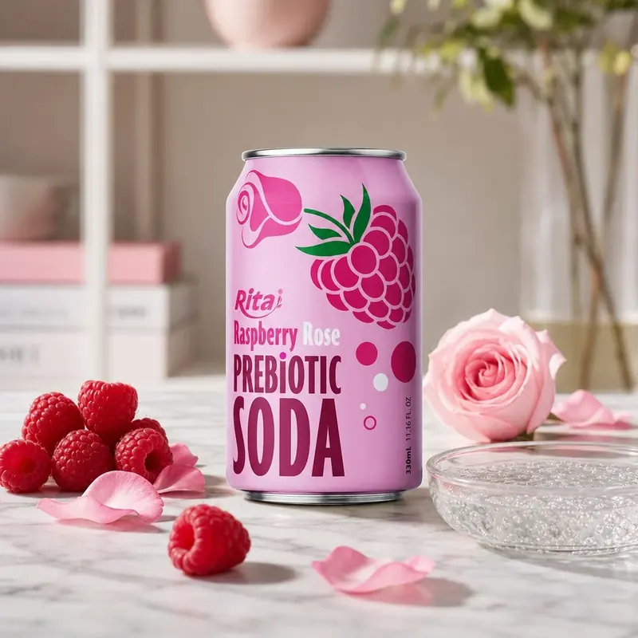
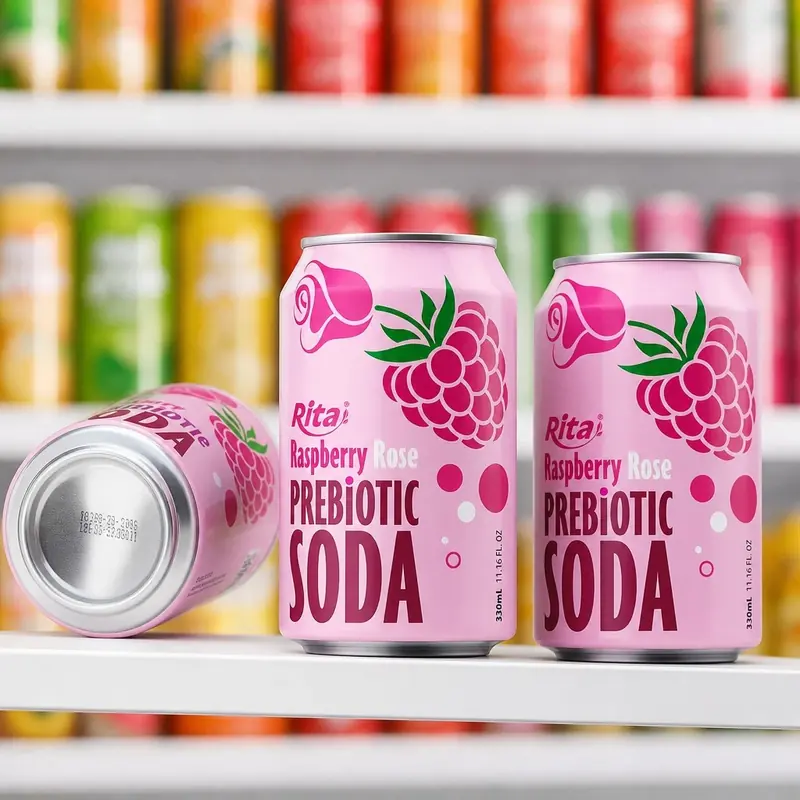

The Raspberry Rose Prebiotic Soda enters the global beverage export conversation at a moment when the carbonated category is being redrawn by flavor novelty, packaging format, and ingredient transparency. Produced by RITA Food and Drink Co., Ltd, a Vietnamese manufacturer shipping to more than 200 countries and territories, the drink combines natural raspberry juice concentrate, rose water essence, and a prebiotic fiber inside a 330ml short aluminum can. For importers, distributors, and private-label partners, the Raspberry Rose Prebiotic Soda 330ml short can presents an export-ready SKU whose flavor story and format both travel well across borders.
Key Takeaways
- Raspberry and rose create a differentiated soda profile in a category still dominated by cola and citrus.
- The 330ml short aluminum can supports single-serve retail, premium shelf presence, and efficient container loading.
- Inulin is used as a formulation marker that reflects current ingredient-led buying criteria.
- RITA runs 50+ automated production lines and exports over 1,200 containers monthly, with OEM and private-label capacity.
- Certification depth and repeatable flavor are becoming decisive factors in beverage import contracts.
Why Raspberry Rose Prebiotic Soda Is Drawing Export Interest
Flavor novelty has become a screening criterion for buyers rather than a marketing afterthought. Distributors entering saturated soda shelves increasingly search for profiles that separate cleanly from cola and lemon-lime incumbents.

Raspberry and rose is an uncommon pairing in carbonated drinks, and that rarity is the commercial argument. The raspberry component delivers a tart, berry-forward top note drawn from natural juice concentrate, while rose water essence softens the finish with a light floral layer. Neither note dominates, which keeps the profile approachable for shoppers who may never have met rose in a soda before. In trade terms, the combination hands a sales team a clean narrative: a familiar fruit anchor supported by a distinctive aromatic accent.
The ingredient list reads short, which matters in markets where label scrutiny keeps rising. Carbonated water, raspberry juice concentrate, rose water essence, inulin, and a measured amount of sweetener form the base, with minimal preservatives used to hold freshness across long shipping cycles.
Sampling behavior reinforces the point. At trade fairs and buyer meetings, berry-forward sodas tend to draw a second pour, and a floral accent gives distributors a talking point that does not require a long explanation on shelf talkers or e-commerce pages.
Prebiotic Fiber as a Formulation Marker
Inulin, the prebiotic fiber in the recipe, has become a familiar reference point for buyers screening soda concepts. Its presence places this prebiotic fiber drink within the ingredient-conscious segment of the carbonated aisle without requiring a reformulation brief from the buyer's side.
For a private-label partner, that baseline can remove months from a development calendar.
RITA's wider fruit juice products line supplies concentrate bases used across many of its carbonated and still formats, which is why flavor drift between lots is treated as a contract issue rather than a cosmetic one.
Consistency Across Batches and Borders
Repeatable flavor is a quiet requirement in export agreements. A profile that shifts between production runs produces complaints, returns, and disputes that grow expensive once containers have cleared customs. RITA builds its process around consistent outcomes, which matters as much for a distributor restocking one account as it does for a retailer extending the SKU across several countries in a single season.
Packaging Format and Its Role in Beverage Trade
The can is part of the export case, not merely the container.

The 330ml short aluminum can is a deliberate format choice. Its compact height fits standard cooler and shelf layouts while still delivering a full single-serve portion, and the shorter body gives the label a tighter canvas that reads quickly at arm's length. The design uses a pink field with a stylized rose, a magenta raspberry illustration, and bubble motifs in pink, magenta, and white, framed by silver rims at top and bottom. Volume appears as 330ml and 11.16 FL OZ, covering metric and imperial declarations within a single print run.
Aluminum also absorbs the realities of ocean freight: temperature swings, stacking pressure, and repeated handling across transfer points. The material is widely recyclable, which supports the sustainability language buyers in Europe, North America, and Oceania increasingly raise during category reviews.
Full artwork and carton specifications for the Raspberry Rose Prebiotic Soda 330ml short can are available to buyers building a regional launch plan, and the same aluminum can packaging platform is shared with other RITA carbonated items.
Why Distributors Prefer the Short Can
Short cans allow efficient pallet configurations and reduce material per unit without shrinking the serving. Dimensional flexibility helps buyers mixing several SKUs in one container, and the format photographs cleanly for online listings where the can often appears alone.
- Compact 330ml volume aligned with single-serve consumption patterns.
- Aluminum body suited to long-haul shipping and stacked pallet loads.
- Dual metric and imperial volume declarations on one label.
- Recyclable material supporting sustainability reporting requirements.
- High-contrast print design that holds up under cooler lighting.
The SKU also sits alongside RITA's broader soft drinks range, giving buyers a way to build a coordinated carbonated set from a single supplier rather than splitting orders across several factories.
Export Outlook for Raspberry Rose Prebiotic Soda
Demand for differentiated carbonated drinks is moving fastest where modern retail is expanding fastest.
Category watchers note that flavored and reduced-sugar soda concepts are taking shelf space away from legacy colas in several regions at once, and short-can formats are appearing more frequently in convenience and travel retail. The pairing of a berry base with a floral accent also maps onto the premiumization trend visible across juice and sparkling categories, where buyers pay for a story they can repeat to their own customers.
Regional fit varies, and that is where the prebiotic soda export conversation gets practical. Buyers in the Americas and Europe often lead with flavor differentiation and recyclability, while distributors across Asia and the Middle East tend to check Halal coverage and shelf stability first. A single validated SKU that satisfies both checklists reduces the number of variants a supplier has to run.
Compliance is the other half of the export conversation. Buyers increasingly ask which certifications a manufacturer already holds before requesting samples, because retrofitting a factory to a new standard mid-contract is slow and costly. For any global beverage export program, pre-cleared documentation is worth as much as the recipe itself.
Manufacturing Scale and Private-Label Supply
Scale determines whether an idea becomes a repeatable shipment.
RITA Food and Drink Co., Ltd has operated since 2004 and now runs more than 50 automated production lines, exporting over 1,200 containers per month to brands in more than 180 countries. That infrastructure supports both catalog items and custom briefs across aluminum cans, glass bottles, PET, and PP formats. For a buyer evaluating a Raspberry Rose Prebiotic Soda listing, the relevant question is whether the supplier can repeat the run at volume without drift, and the product page for the 330ml short can documents exactly that scope.
Certifications on file include BRC, FSSC 22000, Halal Jakim, Halal HCA-GCC, Kosher, ISO, GMP, HACCP, and SMETA, covering the audit expectations of retail and foodservice buyers across most destination markets. Halal coverage in particular opens distribution channels in the Middle East and parts of Southeast Asia that would otherwise require a separate production run.
| Specification | Detail |
|---|---|
| Product | Raspberry Rose Prebiotic Soda |
| Volume | 330ml / 11.16 FL OZ |
| Container | Short aluminum can |
| Base ingredients | Carbonated water, raspberry juice concentrate, rose water essence, inulin, sweetener |
| Label coverage | Metric and imperial volume declarations |
| Supply model | Catalog, OEM, ODM, private label |
| Export reach | 200+ countries and territories |
Specifications as published by RITA Food and Drink Co., Ltd.
Private Label Pathways
The company operates as an OEM beverage manufacturer with a matching ODM capability, and its OEM service lets a buyer take the existing formulation and place their own brand on the short can. Label development, volume declarations, and carton markings are adapted to the destination, while the validated recipe and format keep the technical work minimal.
Acting as a private label soda supplier across more than 200 export destinations also means artwork approvals, shipping documents, and container planning follow patterns the team has already run many times.
That combination shortens time-to-shelf for first-time importers.
Signals from the Wider Beverage Sector
Recent moves across the sector underline how quickly positioning can shift. Vita Coco raised its financial guidance again, a signal that investors continue to reward beverage brands with clear category stories and disciplined distribution.
Quarter Proof's launch of Demi, a mid-strength spirit, shows the same logic from another angle: brands are carving out positions between established categories rather than competing head-on. For soda makers, the parallel is a flavor or format that occupies space no incumbent defends, which is roughly where a raspberry-and-rose profile sits today.
Not every signal is positive. Keurig Dr Pepper's U.S. anti-trust case proceeding to trial and Allied Blenders facing a tax authority inspection in India both remind buyers that regulatory exposure sits alongside commercial opportunity in every destination.
Albert Heijn's restoration of online deliveries after a cyber-security outage adds a supply-chain reminder of its own.
Frequently Asked Questions
What does Raspberry Rose Prebiotic Soda taste like?
The profile leads with tart raspberry from natural juice concentrate and finishes with a light floral layer from rose water essence. The result is bright and aromatic rather than heavily sweet, with fine carbonation carried in a 330ml serving.
What packaging does the product use?
It is filled in a 330ml short aluminum can, equivalent to 11.16 FL OZ, with a pink label featuring a stylized rose, a magenta raspberry illustration, and bubble motifs in pink, magenta, and white. The compact format suits single-serve retail and efficient pallet loading for export.
Can the drink be supplied under a private label?
Yes. RITA offers OEM and ODM programs that allow buyers to apply their own branding, adjust label artwork, and adapt volume declarations for specific destination markets while keeping the validated recipe and can format.
Which certifications does the manufacturer hold?
The facility operates under BRC, FSSC 22000, Halal Jakim, Halal HCA-GCC, Kosher, ISO, GMP, HACCP, and SMETA, which covers most audit requirements raised by retail and foodservice importers.
Does the formula include prebiotic fiber?
Yes. Inulin, a prebiotic fiber commonly used in beverage formulation, is included alongside carbonated water, raspberry juice concentrate, rose water essence, a measured sweetener, and minimal preservatives.